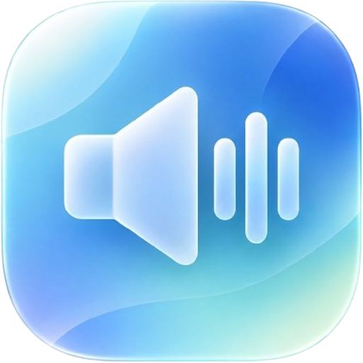
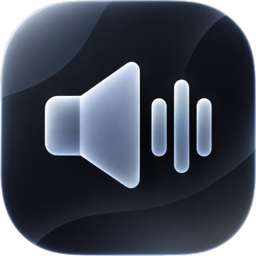

SoundButton
キーを押すだけで、登録した音を鳴らせるサウンドボード。
特長
配信、ゲーム、ちょっとした効果音まで。
キーで鳴らす
好きなキーや、Ctrl・Alt・Shiftとの組み合わせに音を割り当て。F1〜F12にも対応。
押した瞬間に鳴る
音をあらかじめ読み込んでおくので、遅れずに鳴ります。重ねて鳴らす設定も選べます。
録音と編集
マイクで録音して追加。開始・終了位置の調整や、フェードイン・アウトもできます。
公開と共有
音を公開して、ほかの人のサウンドも追加。ボードをリンクで共有できます。
PCとスマホで同期
アカウントを登録すると、サウンドをクラウドに保存して、端末をまたいで使えます（登録は任意）。
バックグラウンドでも
Windows版は、ほかのアプリやゲームを使っている間も、キーで音を鳴らせます。
使い方
はじめてでも、3ステップです。
サウンドを追加
音声ファイル（MP3・WAV・MP4）を選ぶか、マイクで録音します。
キーを割り当て
鳴らしたいキーを押して登録。スマホなど、キーボードがないときは、スキップできます。
押して鳴らす
キーを押すか、画面の「再生」ボタンを押すだけです。
動作環境
| ブラウザ版 | Chrome・Edge・Safari・Firefox の最新版（PC・スマホ）。ホーム画面に追加して、アプリのように使えます。 |
|---|---|
| Windows版 | Windows 10・11（64bit）。ブラウザ版と同じ内容で、バックグラウンドでのキー入力にも対応します。 |
| インターネット | 必要です（ログイン、同期、公開サウンドを使うため）。 |
よくある質問
アカウントは必要ですか？
いいえ。登録しなくても、ゲストとして使えます。同期、サウンドの公開、ボードの共有を使うときだけ、アカウントが必要です。
音声データは、どこに保存されますか？
ゲストのときは、使っている端末の中だけに保存されます。ログインすると、クラウドにも保存され、ほかの端末で使えるようになります。
公開したサウンドの権利は、どうなりますか？
権利は、投稿した本人にあります。市販の楽曲など、権利のない音源は公開できません。詳しくは、SoundButtonの利用規約・著作権のページをご確認ください。
Windows版を起動すると警告が出ます
署名のないアプリのため、Windows SmartScreenの警告が出ることがあります。「詳細情報」→「実行」を押すと起動できます。
不具合や要望は、どこに送ればいいですか？
Discordサーバーまたはメールでお知らせください。エラーが出たときは、画面の「エラーコード」を添えていただけると助かります。
更新履歴
| v1.1 2026年10月 | Windows版：バックグラウンドでのキー入力に対応。サウンド追加時にキーの設定をスキップできるように。 |
|---|---|
| v1.0 2026年10月 | 公開。キー割り当て、録音・編集、公開サウンド、ボードの共有、PCとスマホの同期。 |